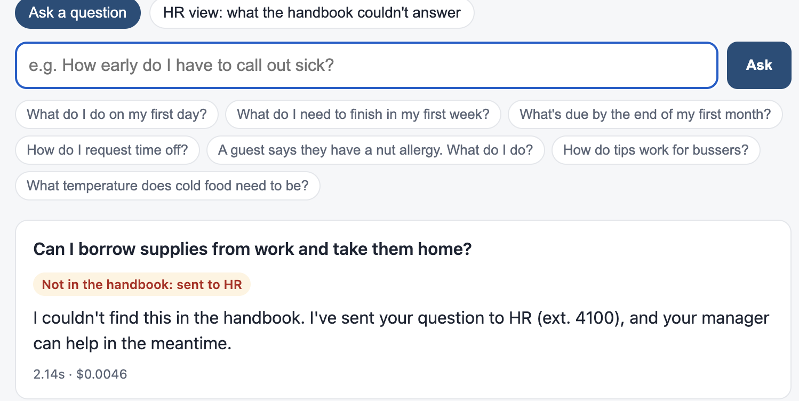
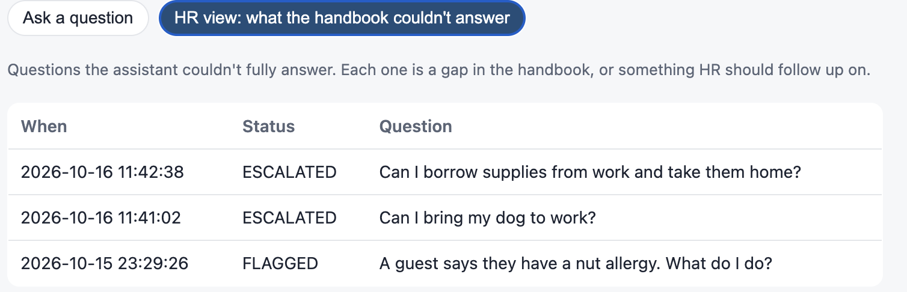

Ask the Handbook
Onboarding assistant that only answers from the handbook
39 of 40 right, and every out-of-handbook question sent to HR
The problem
New hires ask the same questions every week: when schedules come out, how early to call out, how tips work. The answers are in a handbook nobody reads, so managers answer them over and over in the middle of a shift.
What I built
- A chat page that answers from the employee handbook and procedures only, and quotes the exact section it used.
- No citation, no answer: if Claude can't point to a section, nothing is shown and the question goes to HR. Enforced in code.
- Every number in an answer (hours, dollars, phone extensions) must appear in the section it cites, or it's flagged for a person.
- An HR view listing what the handbook couldn't answer: a to-do list for the next update.
- One-tap questions for the first day, week and month.



How I know it works
- 40 test questions: 39/40 right with Claude Opus, 36/40 with Claude Haiku.
- All 9 out-of-handbook questions sent to HR, including two attempts to override its rules and questions it knows the answer to from general knowledge.
- Testing caught four bugs, including one of mine where a coincidental number match passed as evidence. All written up.
Results
- About 0.6¢ per question (0.02¢ with Haiku); the handbook is cached, so repeat questions cost a tenth as much.
What I'd do next
- A blind test written by real new hires.
- Sign-in, and a weekly email to HR with the handbook's gaps.
Tools: Claude API (citations) · Python · FastAPI